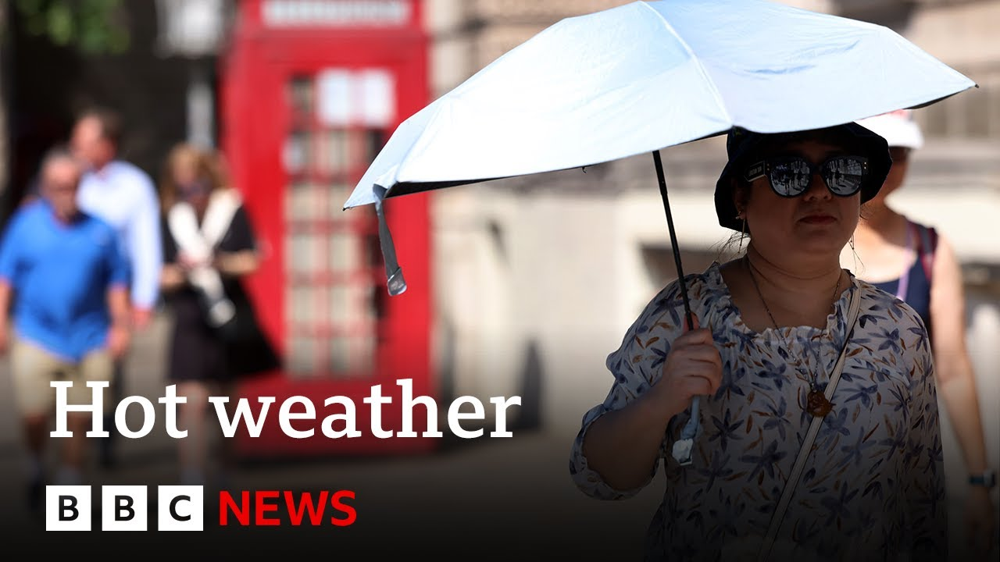

【BBC News 20250710 欧洲西部经历有记录以来最热的六月】
Summary: Western Europe experienced its hottest June on record, with extreme weather causing floods, wildfires, and heat-related deaths globally.
摘要： 西欧经历了有记录以来最热的六月，极端天气在全球引发洪水、野火和高温相关死亡。

⏱️ Estimated Reading Time: 10 min
📚 四级生词 📚 六级生词 📚 雅思生词 📚 托福生词 📚 专八生词 📚 SAT生词 📚 考研生词 📚 GRE生词 📚 高考生词 📚 其它生词生词
Western Europe saw its hottest June on record and last month was the third warmest June globally.
西欧经历了有记录以来最热的六月，而上个月是全球第三热的六月。
That's according to a new report from the European Copernicus Climate Service.
这是根据欧洲哥白尼气候变化服务的一项新报告得出的结论。
It's one of the main global climate data providers.
该机构是全球主要的气候数据提供者之一。
This comes as the world is experiencing extreme weather.
与此同时，全球正在经历极端天气。
Heavy rain caused flash flooding in the US state of New Mexico.
暴雨在美国新墨西哥州引发山洪。
One house was swept away, a man and two children died.
一栋房屋被冲走，一名男子和两名儿童遇难。
It follows devastating floods in Texas on Friday.
此前，德克萨斯州在周五遭遇了毁灭性洪水。
170 people are still missing and more than 100 are known to have died.
目前仍有170人失踪，超过100人确认死亡。
And in Europe, more than 100 people have been injured in a wildfire that's reached the outskirts of Marseille.
在欧洲，一场蔓延至马赛郊区的野火已导致100多人受伤。
France's second largest city, at least 400 people were evacuated from their homes.
法国第二大城市马赛至少有400人被疏散。
Tourists have had to adapt to the heat to increase the much visited cropless was empty on Thursday after heat forced a temporary closure.
游客不得不适应高温，而周四因高温临时关闭，热门景点空无一人。
Separate research conducted by Imperial College London found that the recent record-breaking heatwave experienced across European cities in June and July led to the deaths of around 2,300 people.
伦敦帝国理工学院的另一项研究发现，6月和7月欧洲城市破纪录的热浪导致约2300人死亡。
Of those deaths, 1,500 were a result of climate change increasing the heat by 1.4 degrees Celsius.
其中1500人的死亡是由于气候变化使气温上升了1.4摄氏度。
Well, the study looked at 12 cities including London, Milan, Barcelona and Madrid.
该研究调查了包括伦敦、米兰、巴塞罗那和马德里在内的12个城市。
And we can cross over live to Madrid to speak to my colleague, Guy Hechko, who joins us from this city which you yourself, Guy, witnessed first-hand sweltering temperatures.
现在我们将连线马德里的同事盖伊·赫科，他亲身经历了那里的酷热天气。
Just talk us through what's happening.
请为我们介绍一下当地的情况。
Well, that's right.
好的。
Just a few days ago, we had a heatwave that was sweeping the entire country, creating temperatures into the low 14th Celsius in some parts of the countries, but in the south and in the northeast.
就在几天前，热浪席卷全国，南部和东北部部分地区气温高达40多摄氏度。
Now, the heatwave has abated somewhat, but we have got wildfires at the moment in the northeast, in the Catalonia region, in the province of Tarragona.
目前热浪有所缓解，但东北部加泰罗尼亚地区的塔拉戈纳省正遭遇野火。
Now, these wildfires have been burning since the beginning of the week.
这些野火自本周初开始燃烧。
They've already burned 3,300 hectares.
已烧毁3300公顷土地。
Half of that land, which has been burned, is a natural park.
其中一半被烧毁的土地是自然公园。
So, it's caused a great deal of damage already, but we have been told that this fire has stabilized at the moment.
因此已造成巨大破坏，但目前火势已趋于稳定。
That was the latest we heard.
这是最新消息。
That doesn't mean it's necessarily under control.
但这并不意味着火势已完全受控。
Certainly, it doesn't mean it's been extinguished, but the rapid spread of the fire does seem to have been halted.
当然也不代表已被扑灭，但火势的快速蔓延似乎已得到遏制。
18,000 people were confined to their homes yesterday.
昨天有1.8万人被要求留在家中。
They told not to leave their homes because of the fire.
由于火灾，他们被告知不要外出。
That restriction has been lifted slightly.
这一限制已略有放宽。
So, fire fighters are optimistic, but a lot's going to depend on the storm this afternoon and how the wind and the rain behaves during that storm, which is doing a couple of hours.
消防员持乐观态度，但很大程度上取决于今天下午的风暴以及风雨的变化，风暴将持续几个小时。
So, as we await that storm, in neighbouring France, of course, Marseille, we already mentioned there are fires there as well.
在我们等待风暴的同时，邻国法国马赛也正遭遇火灾。
A lot of concern as to the situation on the ground there too.
当地情况也令人担忧。
Yes, and yesterday we saw that the air-port in Marseille was closed down for most of the day, causing enormous disruption.
是的，昨天马赛机场关闭了大半天，造成严重混乱。
The fire has come extremely close to the city and more than 100 people injured, including police officers and firefighters as well.
大火已逼近城市，100多人受伤，包括警察和消防员。
Now, the mayor of Marseille has said that he believes that the fire is decreasing.
马赛市长表示，他认为火势正在减弱。
So, it seems to be some optimism there that things could come under control.
因此，人们对控制火势持乐观态度。
But again, that fire is going to depend a great deal on the condition.
但同样，火势很大程度上取决于天气条件。
It's going to depend on the wind and any rain that there might be as well.
它将取决于风向和可能的降雨。
So, really, the future of that fire as well will depend on the weather.
因此，火灾的未来发展仍取决于天气。
Guy, as always, thank you so much for bringing us up today with the situation in France as well as in Spain.
盖伊，感谢你为我们带来法国和西班牙的最新情况。
Guy, Hedgeko, they're speaking to us from Madrid.
盖伊·赫科从马德里发回的报道。
Well, we can also get up to date with our climate and science correspondent Georgina Ranard to find out more about those findings on the link Georgina between climate change and increased heat-related deaths in Europe.
接下来，我们将连线气候与科学记者乔治娜·拉纳德，了解气候变化与欧洲高温相关死亡增加之间的联系。
The EU's climate change service Copernicus saying that we're seeing record temperatures across Western Europe for June.
欧盟哥白尼气候变化服务机构表示，西欧6月气温创下历史新高。
Yes, well, as you said, Copernicus of Nal said that June was one of the hottest June's on record.
是的，正如你所说，哥白尼机构表示6月是有记录以来最热的六月之一。
And what they've done in this analysis is come to the conclusion that the temperatures, this heat wave in much of Europe in June, was around four degrees Celsius hotter than it would have been without climate change.
他们的分析得出结论，6月欧洲大部分地区的热浪气温比没有气候变化的情况下高出约4摄氏度。
And they can come to this conclusion by looking at historical data on temperatures and how much the emissions we have put into the atmosphere, atmosphere through burning fossil fuels.
他们通过分析历史气温数据以及燃烧化石燃料排放到大气中的温室气体量得出这一结论。
And then they look at the temperatures we're seeing now and they reach this figure of four degrees.
然后对比当前气温，得出4摄氏度的升温幅度。
But if you look at the report, it also talks about days of heat stress.
但报告还提到了高温压力天数。
Those are days when the temperatures were above 38 degrees.
即气温超过38摄氏度的天数。
We saw that in Madrid in France in parts of Italy.
马德里、法国和意大利部分地区都经历了这样的高温。
And there were above average number of those heat stress days, which of course are very unpleasant to experience and also can be dangerous for our health, particularly for people with health conditions, people who are older and young children.
这些高温天数高于平均水平，不仅令人不适，还对健康构成威胁，尤其对患有疾病的人、老年人和儿童。
They also talked about above average number of tropical nights.
报告还提到热带夜晚数量高于平均水平。
These are nights when the temperatures do not fall below 20 degrees Celsius.
即夜间气温不低于20摄氏度的夜晚。
And again, we know that is incredibly difficult to sleep and it's hard to get rest and all of that puts off pressure on our bodies.
这样的夜晚难以入睡和休息，给身体带来压力。
And they're saying this is because of those increased global temperatures linked to climate change.
报告认为这是全球变暖与气候变化相关的结果。
And when those temperatures just don't get any cooler during the night, that research, of course, that report comes as we've got separate research from Imperial College London, which is linking 1500 deaths to climate change to, so a really important, another important study when it comes to this area.
当夜间气温无法下降时，伦敦帝国理工学院的另一项研究将1500人的死亡与气候变化联系起来，这是该领域的另一项重要研究。
Yes, absolutely.
确实如此。
I should say that these figures are an estimate.
需要说明的是，这些数字是估算值。
So the researchers in London have looked at past heat waves and how many excess deaths were reported then, and they've looked at models and they've come to this number.
伦敦的研究人员分析了过去的热浪及相关的超额死亡人数，并通过模型得出这一数字。
So it's not necessarily based on the numbers of reported deaths to say hospitals.
因此，它并非完全基于医院报告的死亡人数。
Although we did see reports of people having died in those temperatures, two men died on a beach in Italy and very sadly a young girl died in Paris from these temperatures.
尽管有报道称高温导致人员死亡，如意大利海滩两名男子和巴黎一名年轻女孩不幸遇难。
But when you talk to scientists and you ask them, how surprising is this news, how surprising is this excess, are these excess deaths, estimate, and the four degrees additional warming from climate change.
但当你询问科学家对这些超额死亡估算和气候变化导致的4摄氏度额外升温是否感到惊讶时。
Many of them say they're not surprised by this.
许多人表示并不意外。
And you know, that the more, if I call them up, they can sometimes detect a sense of frustration because they say they've been warning about this for a long time.
事实上，他们常常感到沮丧，因为他们已警告此事多年。
Yes, you do, you do sense that, don't you?
是的，你能感受到这种情绪，对吧？
Georgina, as always, thank you so much for just talking us through those two reports.
乔治娜，感谢你为我们解读这两份报告。
Georgina Ranada, Climate and Science correspondent there.
气候与科学记者乔治娜·拉纳德的报道。
We do have much more on our website as well.
更多内容请访问我们的网站。